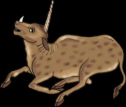
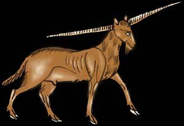
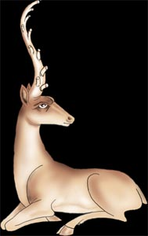
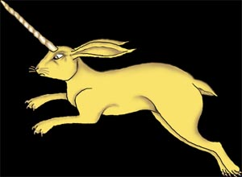

| Startseite | Einhörner sind Fabelwesen | Einhörner in Echt? | Einhörner in den Medien | Einhörner Arten | Einhörner in der IT-Branche | Verabschiedung | |
|---|
Bukephalos war das Pferd von Alexander dem Großen. Das Bukephalos hatte ein großes Horn aus Elfenbein und den smaragdgrün-gesprenkelten Schweif eines Pfaus. Der Geschichte nach war Alexander der Große die einzige Person, die auf Bukephalos reiten konnte. Er und Bukephalos standen sich sehr nahe. Alexander der Große wurde stets bei den Schlachten von seinem Pferd bzw. Einhorn begleitet. Als Bukephalos im Alter von etwa 30 starb, ließ Alexander der Große zu Ehren von ihm eine Stadt errichten.

Das Karkadann wird auch das islamische Einhorn genannt. Es hat den Körper eines Stiers. Zusätzlich zu seinem Horn auf der Stiern hat es ein weiteres kleineres Horn auf der Nase, das an ein Nashorn erinnert. Es ist größer als ein Stier, aber kleiner als ein Kamel. Das Karkadann gilt als böses Einhorn. Bei Bedrohungen sticht es mit seinem Horn auf seinen Feind ein. Die Menschen legten sich oft Stunden auf die Lauer, um an das Horn des Karkadanns zu kommen, daa dieses magische Kräfte besitzt. Sie warteten darauf, dass sich eine Ringeltaube näherte, da Karkadanne vom Gesang der Tauben ganz ruhig werde. Nur so kann man sich dem gefährlichen Einhorn nähern.
Das Yale oder auch Eale stammt ursprünglich aus Süd-Indien. Es hat den Körper und die Größe eines Pferdes, den Kopf eines Wildschweines, zwei labnge spiralförmige Hörner und den Bart einer Ziege. Das Fell ist gelbbraun oder schwarz. Seine Hörner konnte es bei Kämpfen drehen, um sich zu verteidigen. Diese Einhörner wurden früher von Indern als Wächter gegen böse Geister in Tempeln gehalten.

